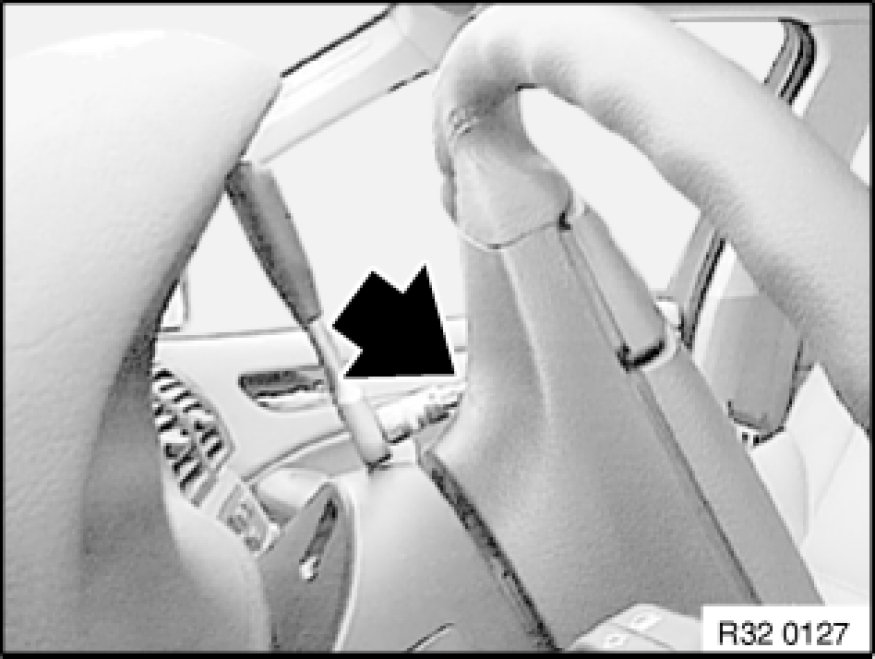
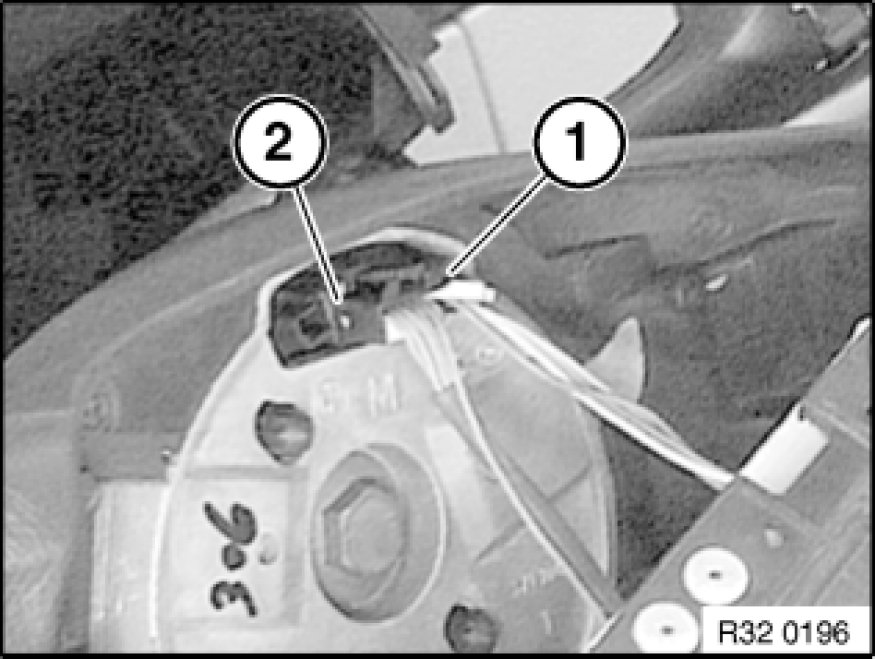

Removing and Installing/Replacing Airbag Unit
32 34 020 - Removing and installing/replacing airbag unit
Warning!
Observe the following instructions to avoid any risk of injury by the airbag unit.
- Comply with safety regulations [1][2]Safety Regulations for Handling Components with Gas Generators for handling components with gas generators.
- Do not exert any force on the airbag unit.
- Use only specified tools for releasing the airbag unit.
Note: Incorrect handling may result in triggering of the airbag unit and thereby cause serious injury.

Important!
Steering wheel Removing and Installing/Replacing Steering Wheel (Basic Steering Wheel) must be replaced if airbag unit has been triggered!
Follow procedure after airbag triggering 72 12 ... Procedure After Airbag Triggering As Result of an Accident.

Necessary preliminary tasks:
- Disconnect battery negative lead Disconnecting and Connecting Battery Negative Lead

Release screws on both sides (Torx socket T30).
Installation Note:
Make sure electrical leads are correctly positioned.
Tightening torque 32 34 1AZ 32 34 Airbag and Steering Wheel Airbag.
Warning!
Danger of injury!
Airbag unit may only be set down with the airbag itself facing upwards.

Tilt airbag unit forwards.
Disconnect plug connections (1, 2) and remove airbag unit.
Replacement:
Remove switch Service and Repair(1) for multifunction steering wheel.
Disconnect plug connections on airbag unit and remove connecting cable.
Installation Note:
Connect plugs to connections of same color on airbag unit.